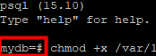

If there are multiple pre- or post-processing commands for creating a snapshot for a PVC, you can write multiple pre-executed commands to the same script and save the script to the persistent directory of a container. Running the script to execute multiple commands simplifies the command input process.
The following are examples of the pre- and post-processing commands:
#Pre-processing command script
#!/bin/bash
#Save the table locking command to the /tmp/op_lock_pgsql.sql file. The table locking command is used to ensure that all tables in public mode in the PostgreSQL database are locked during the container backup process.
#Note: Set the sleep time in the SELECT pg_sleep(time); command to a large value to ensure that these tables are locked during the container backup process. In the post-processing script, a command is used to stop table locking.
echo "begin;DO \$\$ DECLARE row record; BEGIN FOR row IN SELECT tablename FROM pg_tables WHERE schemaname = 'public' LOOP EXECUTE 'LOCK TABLE ' || quote_ident(row.tablename) || ' IN EXCLUSIVE MODE'; END LOOP; END \$\$; SELECT pg_sleep(3000); commit;" > /tmp/op_lock_pgsql.sql;
#Store the output of the SQL statement for locking tables, which helps you determine whether the tables are locked successfully.
file_path="/tmp/DataBackup.txt"
rm -rf "$file_path"
#Switch to an OS user who has the permission to use the PSQL tool to connect to the database.
#Note: This operation is not required if user root can use the PSQL tool to connect to the database.
#su - postgres <<'END'
#You can place some commands (optional) that can be executed only in the environment after user switching. For example, you can run the following command to configure the environment variable PGPASSWORD. As such, you can directly access the database without entering the password for subsequent operations. postgres refers to the user password. Replace it with the actual password.
#export PGPASSWORD='postgres'
#Use the PSQL tool to connect to the database and run the following command to forcibly trigger a checkpoint to write the transaction data that has been committed before tables are locked but is not flushed to disks into disks.
#Note: myuser indicates the database username, mydb indicates the database instance name, 127.0.0.1 indicates the IP address of the database instance, and 5432 (default) indicates the port number of the database instance. Change them based on actual conditions.
if psql -U myuser -d mydb -h 127.0.0.1 -p 5432 -c "checkpoint;" 2>/dev/null; then
#If the PostgreSQL database is successfully connected, lock the tables.
#The following command is used to connect to the database using the PSQL tool and obtain all database names.
output=$(psql -U myuser -d mydb -h 127.0.0.1 -p 5432 -c "SELECT datname FROM pg_database;")
#Save the default separator of the current shell. After the table locking command is executed, the separator is restored.
OLD_IFS="$IFS"
IFS=$'\n'
#Lock all tables in the public schema in all databases saved in output.
#Note: In exclusive mode, these tables are locked so that they cannot be modified or deleted by other sessions. However, other sessions can still read the contents of these tables.
index=0
while read -r line; do
if [ "${index}" != 0 ] && [ "${index}" != 1 ]; then
prefix="("
suffix="rows)"
if [[ $line != $prefix* ]] && [[ $line != *"$suffix" ]]; then
line=$(echo "$line" | sed 's/^ *//;s/ *$//')
eval "psql -U myuser -d $line -h 127.0.0.1 -p 5432 -f /tmp/op_lock_pgsql.sql >> /tmp/DataBackup.txt 2>&1 &"
fi
fi
(( index++ ))
done <<< "$output"
#Perform loop check on the content of the file_path file. If the number of BEGIN field occurrences is the same as that of DO field occurrences in the file, all tables are locked successfully.
#Note: Table locking can be performed only after all user transactions are complete. The time for successfully locking tables cannot be estimated. You can determine whether all tables are successfully locked by checking the execution results of table locking statements in the file_path file.
while true; do
# Obtain the number of DO occurrences in the file.
count_begin=$(grep -o "BEGIN" "$file_path" | wc -l)
count_do=$(grep -o "DO" "$file_path" | wc -l)
# If the number of DO field occurrences reaches the number of BEGIN field occurrences, the loop exits.
if [ "$count_do" -ge "$count_begin" ]; then
#echo "Exit the script because the number of DO field occurrences reaches the number of BEGIN field occurrences."
break
fi
# Wait 1 second.
sleep 10
done
IFS="$OLD_IFS"#Restore the default separator configuration of shell.
#The tables are locked successfully.
echo "200"
#The system invokes the sleep function for a period of time to prevent the database tables from being unlocked after the pre-processing script is executed.
sleep 3000
else
#Failed to connect to the database.
echo "0"
fi
#If user switching has been performed by running the su - postgres command, run the exit command to exit the user after the script is executed. Otherwise, you do not need to run the exit command.
#exit
#END
#Post-processing command script
#!/bin/bash
#Switch to an OS user who has the permission to use the PSQL tool to connect to the database.
#Note: This operation is not required if user root can use the PSQL tool to connect to the database.
#su - postgres <<'END'
#(Optional) You can place some commands that can be executed only in the environment after user switching. For example, you can run the following command to configure the environment variable PGPASSWORD. As such, you can directly access the database without entering the password for subsequent operations. postgres refers to the user password. Replace it with the actual password.
#export PGPASSWORD='postgres'
#Use the PSQL tool to connect to the database and run the following command to forcibly trigger a checkpoint to write the transaction data that has been committed before tables are locked but is not flushed to disks into disks.
#Note: myuser indicates the database username, mydb indicates the database instance name, 127.0.0.1 indicates the IP address of the database instance, and 5432 (default) indicates the port number of the database instance. Change them based on actual conditions.
if psql -U myuser -d mydb -h 127.0.0.1 -p 5432 -c "SELECT 1;" 2>/dev/null; then
#Connect to the database and obtain the information about the process that contains pg_sleep.
processes=$(psql -U myuser -d mydb -h 127.0.0.1 -p 5432 -t -c "SELECT pid, state FROM pg_stat_activity WHERE query LIKE '%pg_sleep%'")
#Check whether the process information is obtained.
if [ -z "$processes" ]; then
echo "No process containing pg_sleep is found."
else
#Traverse each process and terminate all processes that contain pg_sleep.
while read -r line; do
pid=$(echo $line | awk '{print $1}')
if [ -n "$pid" ]; then
echo "Stopping the process: $pid"
psql -U myuser -d mydb -h 127.0.0.1 -p 5432 -c "SELECT pg_terminate_backend($pid);"
fi
done <<< "$processes"
fi
#If you need to stop execution of the pre-processing script in advance, forcibly stop the sleep process in the pre-processing script. In the command, set grep based on the execution result of ps -ef in the actual environment, and change the field printed in awk based on the PID column in the execution result of ps -ef.
pid=$(ps -ef | grep "/bin/bash /var/lib/postgresql/backup/dataprotect_pgsql_consistency_pre_script.sh" | grep -v grep | awk '{print $1}')
[ ! $pid ] && echo "pid is null" && echo "0" && exit
#Forcibly stop the sleep process in the pre-processing script to unlock the PostgreSQL database.
subtree=$(pstree -p $pid) subtree=$(pstree -p $pid)
right_str=${subtree##*\(}
sleep_pid=${right_str%*)}
kill -9 $sleep_pid
kill -9 $pid
#The unlocking is successful.
echo "200"
else
#Failed to connect to the database.
echo "0"
fi
#If user switching has been performed by running the su - postgres command, run the exit command to exit the user after the script is executed. Otherwise, you do not need to run the exit command.
#exit
#END
Procedure
- Upload the scripts to any persistent directory in the container and run the following commands on the container page to add permissions to the script files. In this example, the pre-processing script location is /var/lib/postgresql/backup/dataprotect_pgsql_consistency_pre_script.sh and the post-processing script location is /var/lib/postgresql/backup/dataprotect_pgsql_consistency_post_script.sh. Modify the content based on the actual script locations.
chmod +x /var/lib/postgresql/backup/dataprotect_pgsql_consistency_pre_script.sh chmod +x /var/lib/postgresql/backup/dataprotect_pgsql_consistency_post_script.sh
- Run the following command to log in to the PostgreSQL database:
psql -U myuser -d mydb -h 127.0.0.1 -p 5432
myuser indicates the database username, mydb indicates the database instance name, 127.0.0.1 indicates the IP address of the database instance, and 5432 (default) indicates the port number of the database instance. Change them based on actual conditions.
If the following information is displayed, the database is successfully accessed. In this case, go to 4. Otherwise, go to 3.

- Run the following command to switch to the user (for example, postgres) for installing the PostgreSQL database and run the command in 2:
su - postgres
- If the command output indicates that the database is successfully accessed, cancel the annotation of the following command and proceed to 4.
#su - postgres <<'END'
- If the command output indicates that the database fails to be accessed, contact Huawei technical engineers.
- If the command output indicates that the database is successfully accessed, cancel the annotation of the following command and proceed to 4.
- Modify all related contents in the scripts and save the settings.
- Change the parameter values in the following command provided based on actual conditions. myuser indicates the database username, mydb indicates the database name, 127.0.0.1 indicates the IP address of the database instance, and 5432 (default) indicates the port number of the database instance.
psql -U myuser -d mydb -h 127.0.0.1 -p 5432
- Replace postgres in the command with the actual password of the user.
export PGPASSWORD='postgres'
- In the following operations, the pre-processing script location /var/lib/postgresql/backup/dataprotect_pgsql_consistency_pre_script.sh and post-processing script location /var/lib/postgresql/backup/dataprotect_pgsql_consistency_post_script.sh are used as examples. You can modify the content based on the actual script locations.
- Change the parameter values in the following command provided based on actual conditions. myuser indicates the database username, mydb indicates the database name, 127.0.0.1 indicates the IP address of the database instance, and 5432 (default) indicates the port number of the database instance.
- Add pod labels and annotations by referring to Pod Configuration in the Production Environment for Application-Consistent Backup (General). The following shows examples of the pre- and post-processing commands entered when you add annotations:
#Pre-processing command kubectl annotate pod -l label=value -n namespace pre.hook.dataprotect.backup.io/command='["/bin/sh", "-c","/var/lib/postgresql/backup/dataprotect_pgsql_consistency_pre_script.sh"]' #Post-processing command kubectl annotate pod -l label=value -n namespace post.hook.dataprotect.backup.io/command='["/bin/sh", "-c","/var/lib/postgresql/backup/dataprotect_pgsql_consistency_post_script.sh"]'

To ensure that the pre- and post-processing commands can be executed properly, the script locations in the commands must be the same as the actual locations to which the scripts are uploaded.